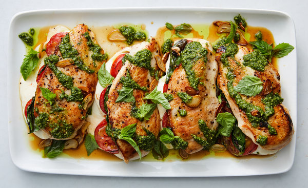

Chicken Caprese

Tomatoes cooked in balsamic vinegar are the perfect sweet-tart compliment to this cheesy chicken.
Ingredients
- 1 tbsp. extra-virgin olive oil
- 450 g boneless skinless chicken breasts
- Salt
- Freshly ground black pepper
- 50 ml balsamic vinegar
- 2 cloves garlic, crushed
- 300 g cherry tomatoes, halved
- 2 tbsp. freshly torn basil
- 4 slices mozzarella
Directions
- In a large skillet over medium-high heat, heat oil. Season chicken with salt and pepper and cook until golden and cooked through, 6 minutes per side. Transfer to a plate.
- Add balsamic vinegar to skillet, then add garlic and cook until fragrant, 1 minute. Add tomatoes and season with salt. Let simmer until soft, 5 to 7 minutes. Stir in basil.
- Return chicken to skillet and nestle in tomatoes. Top with mozzarella and cover with a lid to melt.
- Spoon tomatoes over chicken and serve.